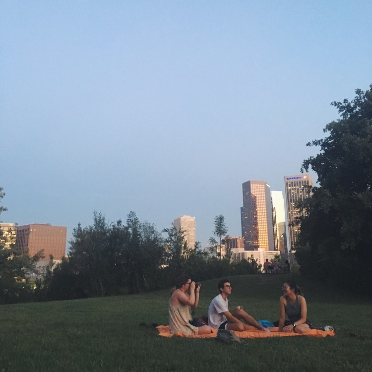
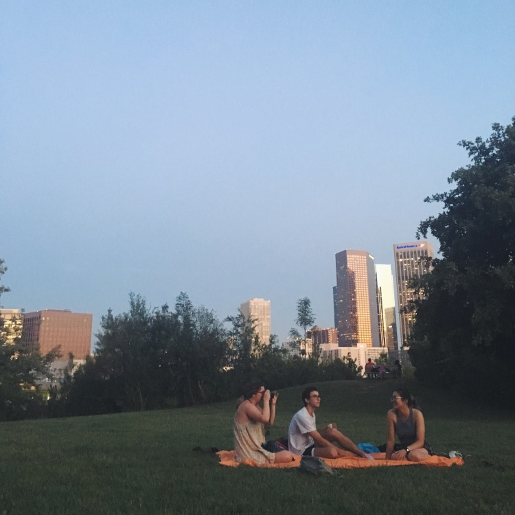

We grew up in each other’s passenger seats.
We shared our darkest secrets, our fears, our regrets,
while untouched college applications sat open
on our laptops. We drove circles
around this place, back and forth and back
again, and we felt the weight of the world
against our spines and time itself
snapping at our heels.
We loved and didn’t love and lost our virginities
and drove home alone, with the silent streetlights and
winding freeways. We knew we loved our mothers.
We found it within ourselvesto love our fathers,
and placed ourselves somewhere in-between.
We drank coffee just to feel alive. We found home
between the lines of each other’s poetry and even then
we were not poet enough to build something real.
We drove to lookouts just to get away and got
parking tickets.
And that was it and then it ended.
And that was it and then time moved on and so
we did too and we were gone and the town
was still there: the lookout and the roads and every moment that ever burned and
every bit of ourselves we left behind.